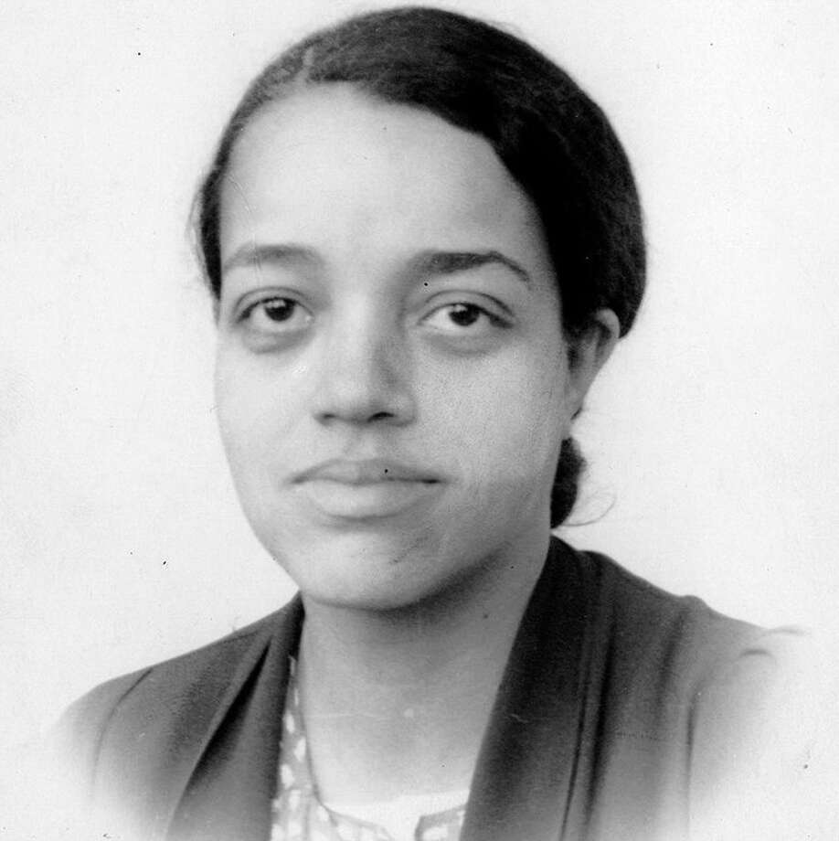

Augusta Ada Byron King, mais conhecida como Ada Lovelace devido a seu titulo de Condessa de Lovelace, foi uma mulher, mãe, matemática e escritora brilhante. Postumamente conhecida como encantadora de números, mãe dos softwares e criadora do primeiro programa de computadores da história.

Dorothy Vaughan
Dorothy Johnson Vaughan (Kansas City, 20 de setembro de 1910 — Hampton, 10 de novembro de 2008), foi uma matemática estadunidense, que trabalhou na National Advisory Committee for Aeronautics (NACA), a agência predecessora da NASA.
Gerald A. Lawson
Gerald A. "Jerry" Lawson, foi um engenheiro eletrônico estadunidense. Hoje é reconhecido principalmente pelo trabalho no design do console de videogame Fairchild Channel F, bem como por liderar a equipe que foi pioneira na criação do cartucho de videogame comercial.